B-2 分模块画原理图
这一次的原理图比案例 A 大不少：26 个元件，分成 6 个功能模块。我们不再拉一根根长导线，而是用网络标签把模块“隔空”连起来，再用矩形框和文字给每个模块分区——这样别人一眼就能看懂。和案例 A 相同的操作只简单回顾，重点讲新东西。
B2.1 新建工程，规划 6 个模块#
- 和 A-1 一样新建一个工程，本例名字叫「ESP32-C3彩灯板」。
- 打开原理图图页。本例的图纸设成了「无图」（没有图框和标题栏），所以截图里看不到右下角的标题栏；用默认图框也完全没问题。
动手放元件之前，先在脑子里（或纸上）把原理图分好区，照着 B-0 的框图：
| 分区 | 包含的元件 | 和别的模块怎么连（网络名） |
|---|---|---|
| ① USB 接口（供电 + 数据） | USB1、R1、R2 | VBUS、GND、USB_D+、USB_D- |
| ② 电源：5V → 3.3V | U2、C1、C2、C3、R3、LED4 | VBUS → 3V3 |
| ③ ESP32-C3 模组 | U1、C4、C5、R4、R5 | 3V3、EN、BOOT、RGB_DIN、USB_D±、IO0~IO5 |
| ④ 复位与 BOOT 按键 | SW1、SW2、R6、C6 | EN、BOOT |
| ⑤ RGB 彩灯（WS2812B ×3） | LED1~3、C7~C9、D1 | RGB_DIN、VBUS → VLED |
| ⑥ 排针（预留扩展） | J1 | VBUS、3V3、GND、IO0、IO1、IO3、IO4、IO5 |
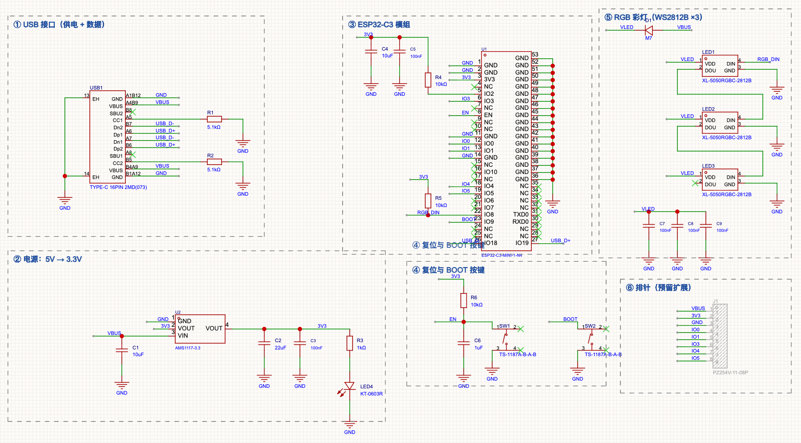
B2.2 ① USB 接口：16P Type-C#
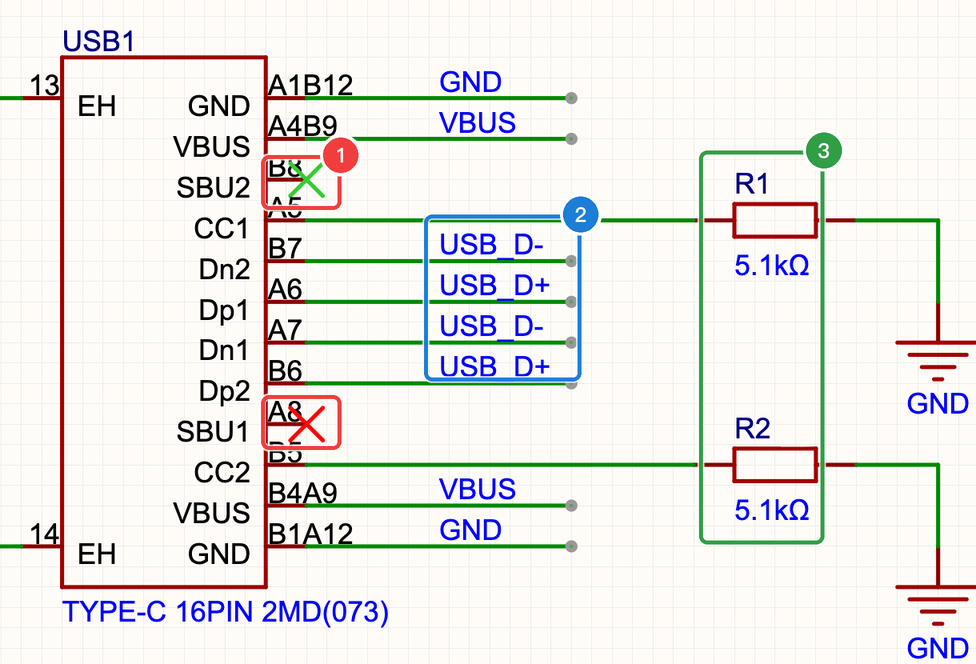
本例用的插座 C2765186 的符号，信号脚全在左边，放下后按 X（左右翻转）把它镜像过来，让信号脚朝右、对着模组的方向，连线更顺。
新操作：非连接标识#
案例 A 的 NE555 所有引脚都用上了，所以 A2.10 只是提了一句。这次 SBU 和模组上都有不用的引脚，正式用一下：
- 点菜单「放置」→「非连接标识」（工具栏上也有一个 ✕ 图标）
- 鼠标上出现一个 ✕，对准引脚的末端单击，就打上了；可以连续打，按 Esc 结束
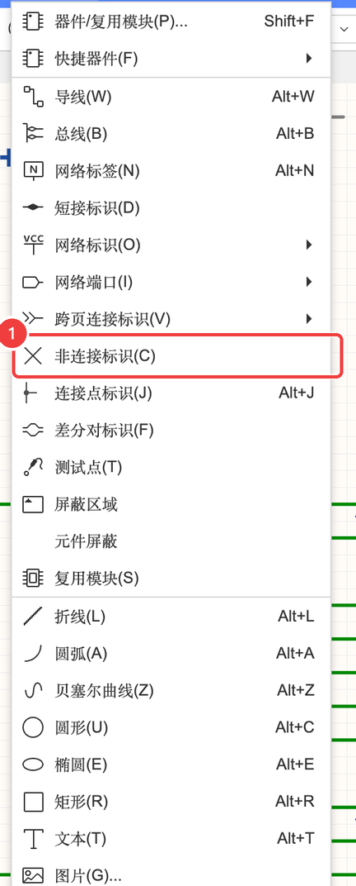
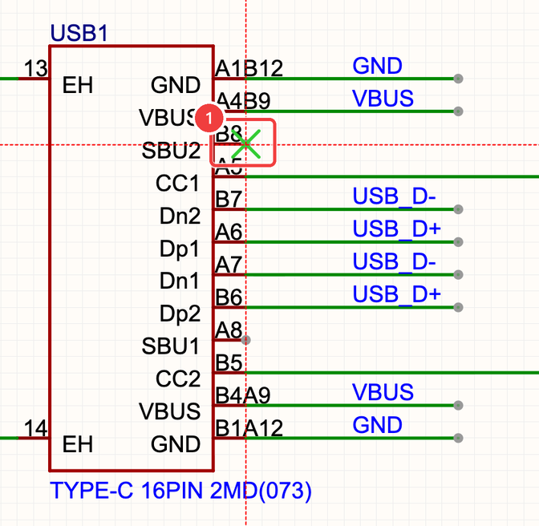
B2.3 ② 电源：5 V 变 3.3 V#
ESP32-C3 只能用 3.3 V，USB 给的是 5 V，中间要一颗稳压芯片 U2（AMS1117-3.3，基础库）：
- U2 的输入脚接
VBUS，旁边一个 10 µF 输入电容 C1； - 输出脚就是
3V3网络，旁边 22 µF + 100 nF（C2、C3）； - 3V3 → R3（1 kΩ）→ LED4（红）→ GND：电源指示灯，一插电就亮，方便判断有没有电。
B2.4 ③ ESP32-C3 模组#
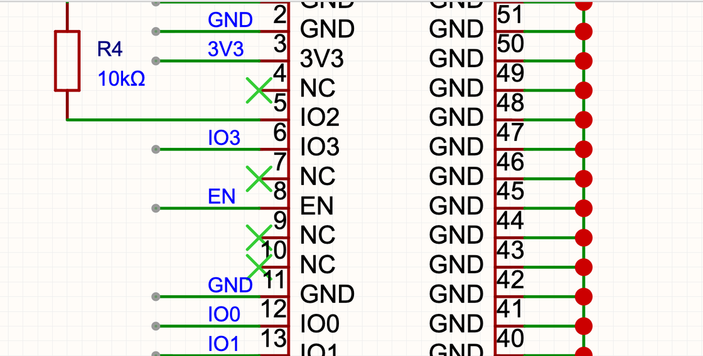
模组 U1（C2838502，扩展库）的外围几乎全部照抄规格书（B-1）：
- 电源：3V3 脚接
3V3，旁边并 C4（10 µF）+ C5（100 nF）；所有 GND 脚（包括中间的散热焊盘）接 GND。 - USB：IO18 →
USB_D-，IO19 →USB_D+。 - EN（使能 / 复位）：接
EN网络，在按键模块里接 RC 延时和 RST 键。 - Strapping：IO2 经 R4（10 kΩ）上拉到 3V3；IO8 是
RGB_DIN，经 R5（10 kΩ）上拉；IO9 是BOOT。 - 排针用的 IO：IO0、IO1、IO3、IO4、IO5 各放一个同名网络标签。
- 其余没用的引脚：全部打非连接标识。
B2.5 ④ 复位与 BOOT 按键#
- SW1（RST）：一端接
EN，另一端接 GND。 - SW2（BOOT）：一端接
BOOT（IO9），另一端接 GND。
按键本身只是“按下就接通”的开关。那没按的时候，引脚是什么电平？这就要靠上拉电阻了。按住下面的按钮试试：
B2.6 ⑤ RGB 彩灯：一根线串着传数据#
- 模组 IO8（
RGB_DIN）→ LED1 的 DIN；LED1 的 DOU → LED2 的 DIN；LED2 的 DOU → LED3 的 DIN；LED3 的 DOU 不接（打 ×）。 - 三颗灯的电源脚都接
VLED；VLED来自VBUS经过二极管 D1（M7）降压（原因见 B-1）。 - 每颗灯旁边一个 100 nF 去耦电容（C7、C8、C9）。
B2.7 ⑥ 排针：引出几个 IO 口#
J1（1×8 排针，C492407）的 8 只脚依次是：1 VBUS（5V）、2 3V3、3 GND、4 IO0、5 IO1、6 IO3、7 IO4、8 IO5，每只脚放一个同名网络标签。
排针是直插件，自己焊很容易，没必要让工厂贴。选中 J1，在右侧属性面板里把「加入BOM」改成「否」（属性面板的各项见 A2.5）。这样导出的 BOM 里就没有它，SMT 时工厂也不会去找这个料。
B2.8 用网络标签连接模块，用矩形和文字分区#
6 个模块之间一根跨模块的长导线都没有，全靠网络标签（A2.9）：模组 IO8 旁边放一个 RGB_DIN，彩灯模块 LED1.DIN 旁边也放一个 RGB_DIN，它们就连通了。
| 连接方式 | 怎么放 | 适合 |
|---|---|---|
| 导线 | ⌥W | 模块内部、距离很近的连接，一眼就看清 |
| 网络标签 | ⌥N | 同一张图纸里跨模块的连接；名字相同就相连 |
| 电源 / 地符号 | 工具栏 VCC / GND 图标 | VBUS、3V3、GND 这种到处都要用的电源网络 |
| 网络端口 | 放置 → 网络端口 | 多张图纸、层次图之间的连接（大项目才用，见 第 4 章） |
最后给每个模块画一个分区框、写一个标题：
- 「放置」→「矩形」（⌥R），在模块四周拉一个框
- 「放置」→「文本」（⌥T），在框的左上角写标题，比如“① USB 接口（供电 + 数据）”
矩形和文字都是没有电气意义的图形，只是给人看的，不影响连接关系。
B2.9 检查：DRC 与器件标准化#
第一次 DRC：2 个警告#
和 A2.11 一样，「设计」→「检查 DRC」。第一次结果是 0 致命错误、0 错误、2 个警告：
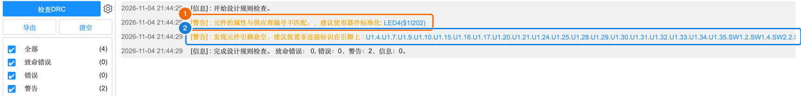
- 警告②（引脚悬空）：列出了所有既没连线、也没打 × 的引脚。挨个打上非连接标识（双击警告可以跳到对应位置），再检查一次就只剩警告①了。
- 警告①（属性与供应商编号不匹配）：LED4 元件上记录的属性（名称、制造商编号等）和立创商城里 C2286 的标准资料对不上，软件建议做“器件标准化”。
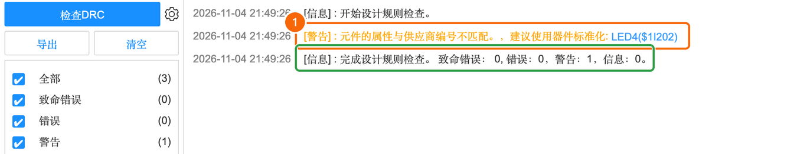
新面板：器件标准化#
点底部面板的「器件标准化」标签，它会把原理图里所有元件按“位号聚合”列出来，逐个和立创商城的资料比对：
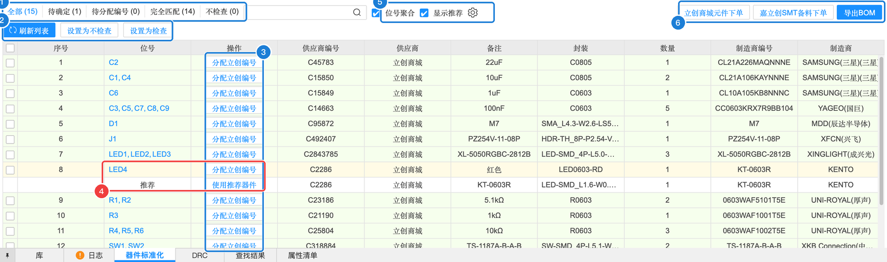
| 编号 | 区域 | 含义（大白话） | 本例 | 什么时候用 |
|---|---|---|---|---|
| 1 | 分组标签 | 全部 / 待确定 / 待分配编号 / 完全匹配 / 不检查，括号里是数量 | 全部 15、待确定 1、完全匹配 14 | 先点「待确定」只看有问题的 |
| 2 | 刷新列表 / 设置为不检查 / 设置为检查 | 改完原理图后刷新；某个元件你确定没问题、不想再被提醒，可以设为“不检查” | — | 自定义元件、排针这类不需要标准化的 |
| 3 | 操作列 | 每一行的「分配立创编号」：给元件指定 / 更换 C 编号；有推荐时显示「使用推荐器件」 | LED4 有「使用推荐器件」 | 元件没有 C 编号时 |
| 4 | 推荐行 | 软件根据 C 编号找到的“标准”器件：这里推荐的是 KT-0603R（同样是 C2286，但封装是 LED-SMD_L1.6-W0.8-R-RD） | — | 看清楚推荐器件的封装是不是你想要的 |
| 5 | 位号聚合 / 显示推荐 | 同一种元件合并成一行显示；显示 / 隐藏推荐行 | 都勾选 | — |
| 6 | 立创商城元件下单 / 嘉立创SMT备料下单 / 导出BOM | 直接按这张清单去买元件、给 SMT 备料、导出 BOM | — | B-4 下单时 |
点 LED4 的「使用推荐器件」，弹出「替换器件」对话框：
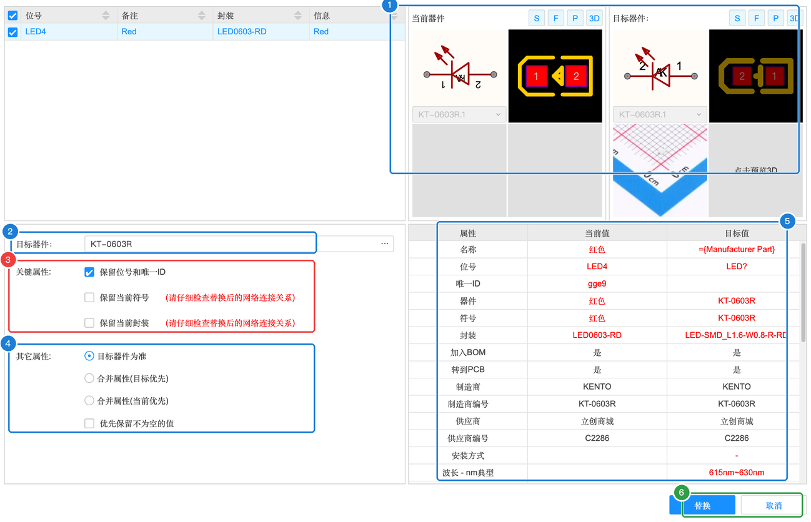
| 编号 | 属性 | 含义（大白话） | 本例怎么填 | 什么时候需要改 |
|---|---|---|---|---|
| 1 | 当前器件 / 目标器件预览 | 左右对比两者的符号（S）、封装（F）、实物图（P）、3D | 两个封装长得不一样 | 一定要看封装，封装不同就要特别小心 |
| 2 | 目标器件 | 要换成哪个器件，可以点右边按钮另选 | KT-0603R | 想换成别的器件时 |
| 3 | 关键属性 | ☑ 保留位号和唯一ID：换完还叫 LED4；☐ 保留当前符号；☐ 保留当前封装（旁边红字提醒：请仔细检查替换后的网络连接关系） | 默认（只勾第一项） | 只想更新资料、不想动封装时勾「保留当前封装」 |
| 4 | 其它属性 | 名称、制造商等属性以谁为准：◉目标器件为准 / ○合并属性（目标优先）/ ○合并属性（当前优先）；☐ 优先保留不为空的值 | 目标器件为准 | 你手动填过一些自定义属性、想保留时选“合并” |
| 5 | 属性对比表 | 名称、位号、器件、符号、封装、加入BOM、制造商编号、供应商编号……当前值和目标值逐行对比，不同的标红 | 封装一行不同 | — |
| 6 | 替换 / 取消 | 点「替换」执行。替换后对话框不会自己关，点「取消」关掉 | 替换 | — |
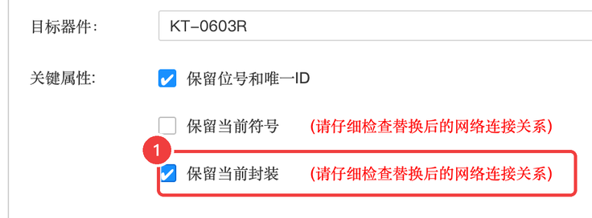
替换后再跑一次 DRC，变成了 0 错误、0 警告：
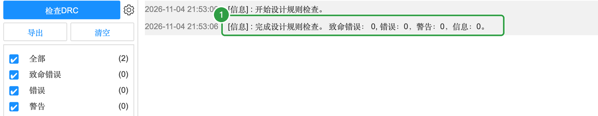
对照参考设计自查#
DRC 只能查出“连没连”，查不出“该不该这么连”。最后对照规格书再过一遍：
- USB：D+ 两只脚连在一起、D- 两只脚连在一起；D+ → IO19，D- → IO18（没有接反）
- CC1、CC2 各一个 5.1 kΩ 到 GND
- AMS1117：输入接 VBUS、输出是 3V3，输入输出电容都在
- 模组：3V3 旁有 10 µF + 100 nF；所有 GND 脚接地
- EN：10 kΩ 上拉 + 1 µF 到地 + RST 键到地
- IO2、IO8 有上拉；BOOT 键接 IO9 到地
- 彩灯：DIN / DOU 串联方向正确；VLED 经过 D1；每颗一个 100 nF
- 排针设为不加入 BOM；网络标签的名字没有拼错（
USB_D+不是USB_D +） - DRC：0 错误，只剩 LED4 那 1 个可以忽略的警告